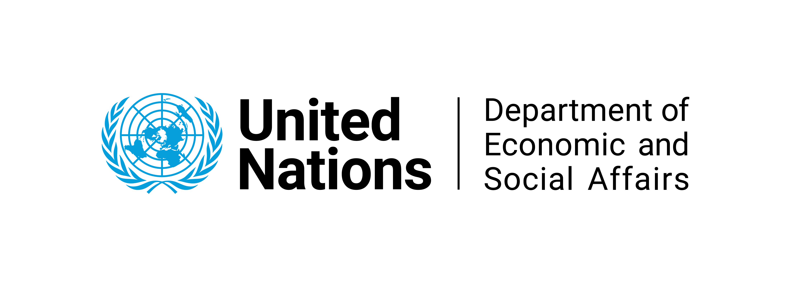
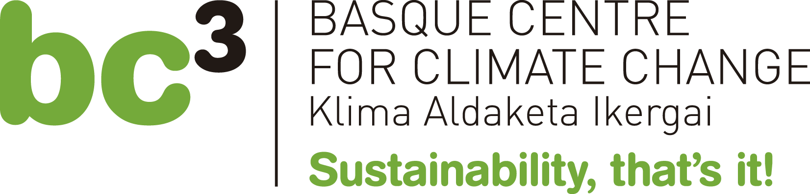
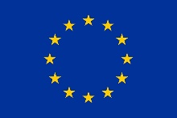
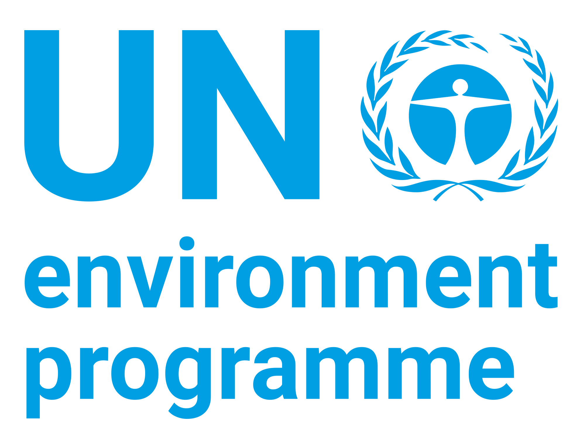
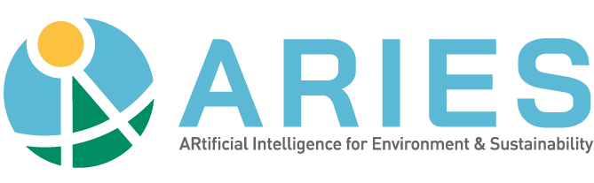
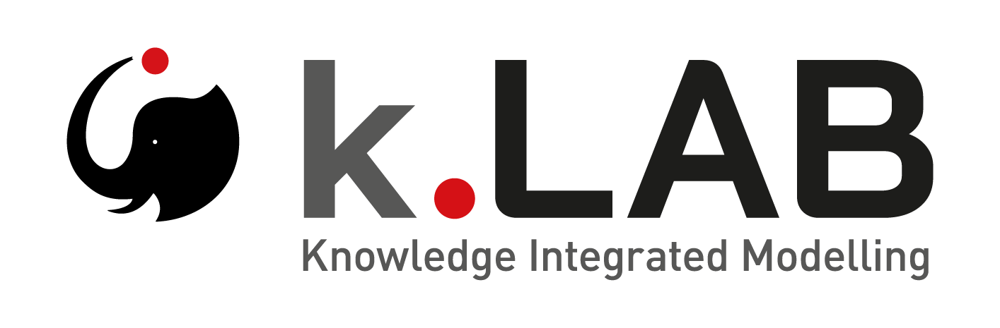
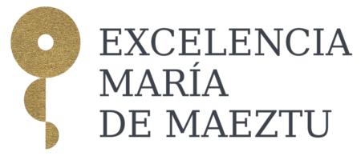

The ARIES for SEEA Explorer application puts the SEEA Ecosystem Accounting standard at the fingertips of users worldwide. It works anywhere in the world, choosing data sources and accounting methods based on the geographical and temporal context selected by the user. Artificial intelligence, based on the k.LAB technology, is used to choose the most appropriate methods and data. This application grows with time, reflecting any innovation in Ecosystem Accounting and any new data, as well as the feedback of the global SEEA community.
ARIES for SEEA is a component of the ARIES (ARtificial Intelligence for Environment & Sustainability) ecosystem: an integrated, open-source modelling platform for environmental sustainability, where researchers from across the globe can add their own data and models to web-based repositories. The ARIES platform offers consistent hosting of data and models, naming conventions, and quality assurance rules, thereby ensuring that these data and models are Findable, Accessible, Interoperable and Reusable by all.
The application is in early beta status: all functionalities have been tested successfully, but problems may remain and many functionalities will be improved and extended over time.
This application will be updated continuously, providing improved software stability and new functionalities with time.
Your feedback is welcome and important. Please write to our support service with any comments or suggestions. Thanks!
The application is funded by the European Union through the NCAVES project. It has involved teams from UN DESA, UNEP, BC3 and USGS along with many other contributors of data and models. The main contributors are:
Special gratitude to Sean Lovell (UN Global Platform), Maria José Sanz (BC3, Ikerbasque), Alba Marquez (BC3), Andrea Antonello (BC3/HydroloGIS), Angel Gimenez (BC3), Yuwei Wu (BC3), Jessica Ying Chan (UN DESA), Joachim Maes (JRC), Fernando Santos (URJC) and the global SEEA community.
|  |  |  |  |  |  |  |